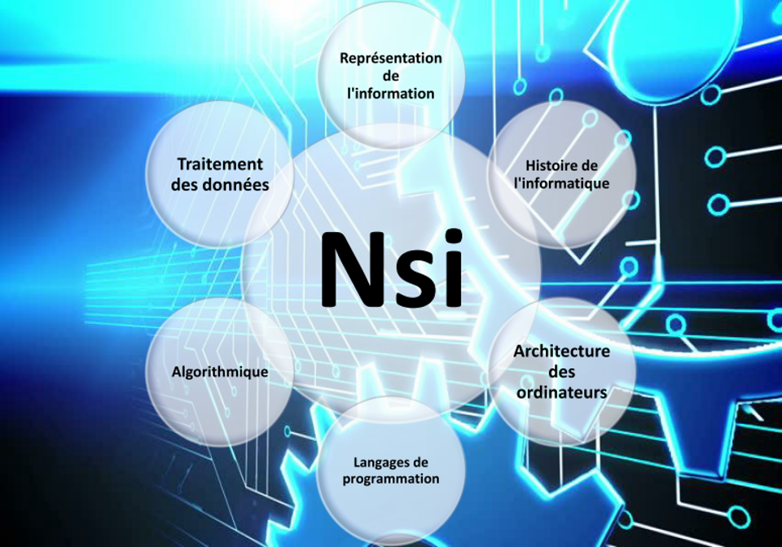

Lycée Augustin Thierry
Types de langages
NSI : les différents langages appris
Les métiers, les études
Les différents métiers possibles avec la spé NSI
Accueil

C'est une nouvelle matière récente, elle permet d'ouvrir beaucoup de voie dans le secteur et donne un avantage aux élèves qui ont pris cette spécialité dans leur futur étude.